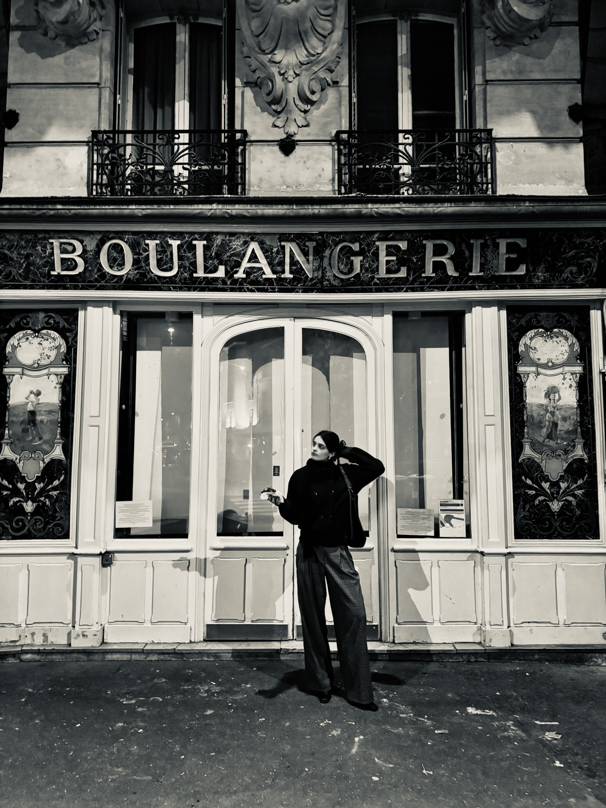
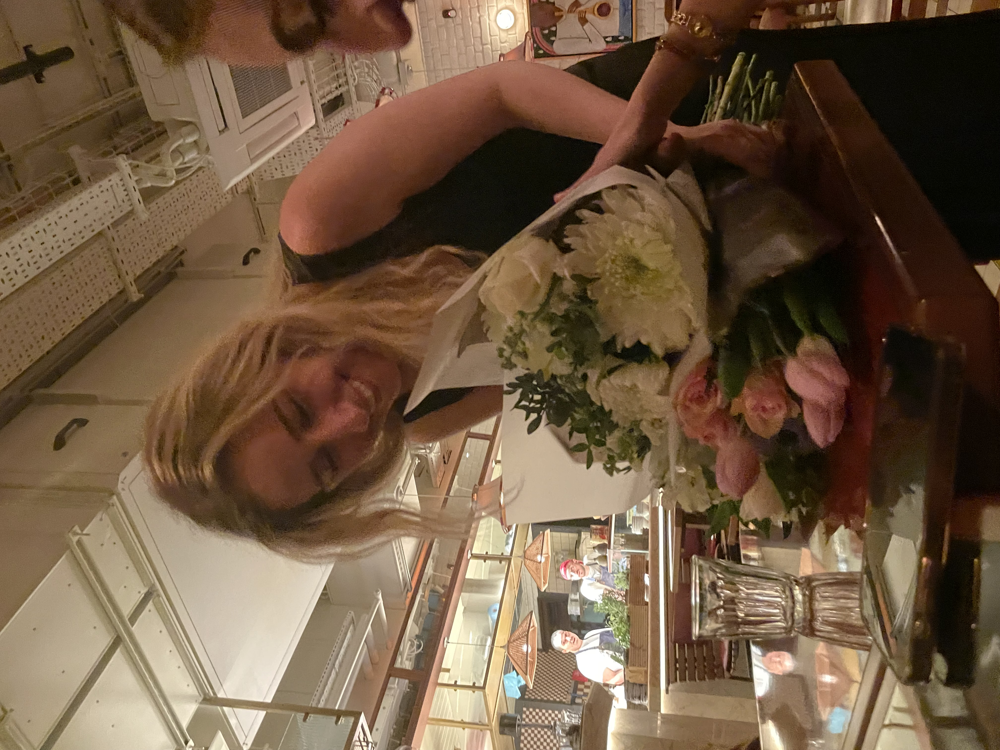
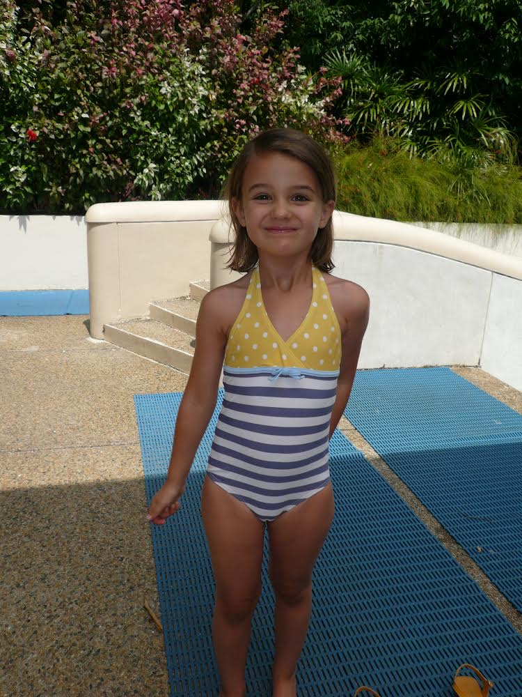
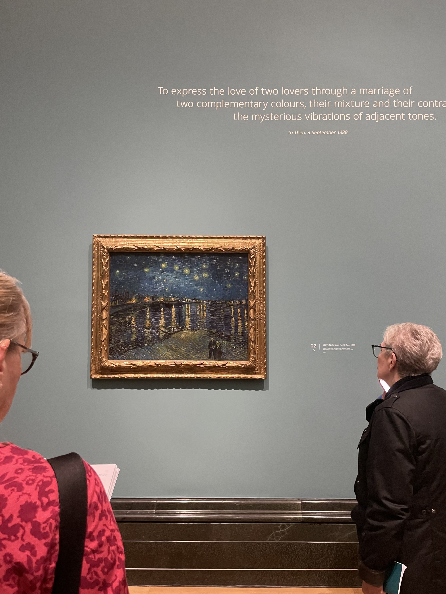
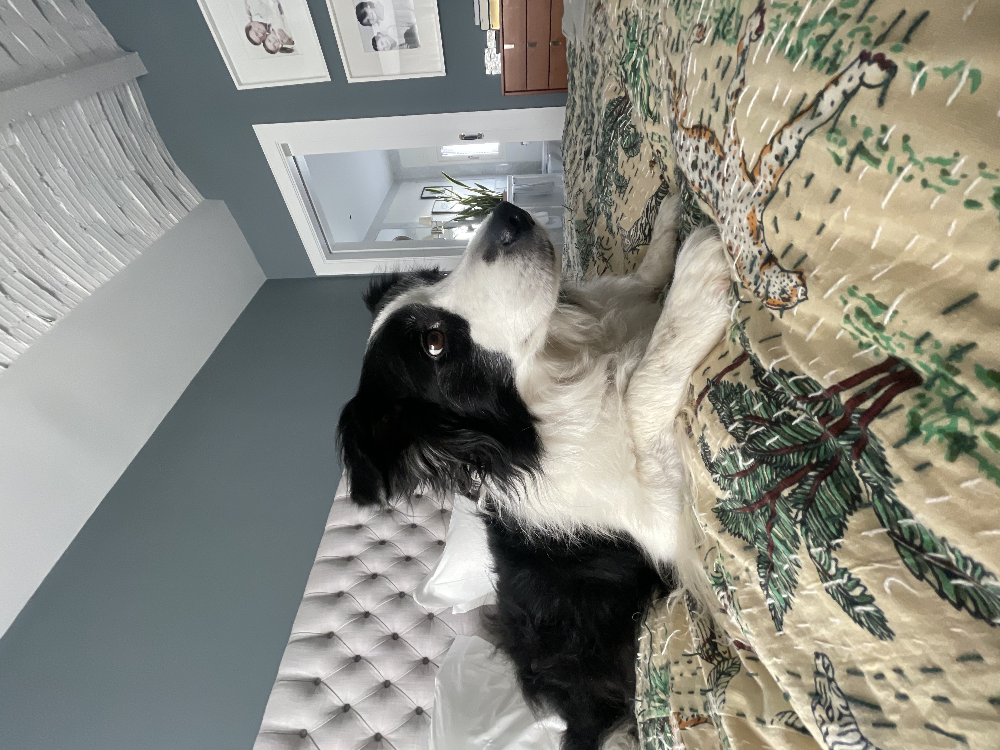

Nicole Sofia Stott Lozano
Hello! I’m Nicole — welcome to my digital space.
I’m in my final year of a BSc in Creative Computing, where I explore the intersection of design, technology, and storytelling. This portfolio is something I’m excited to start using more regularly — a space to document, reflect, and share my creative journey as it grows. My work spans areas like web development, UX/UI design, photography, and psychology. You’ll find a mix of university projects, personal experiments, and visual explorations — all shaped by my curiosity for how people interact with technology and the world around them.
Take a look around and feel free to connect :) I’m always open to new ideas, collaborations, and conversations!







